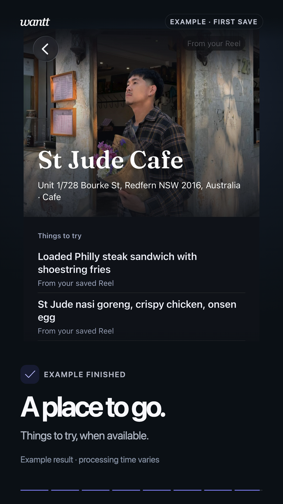
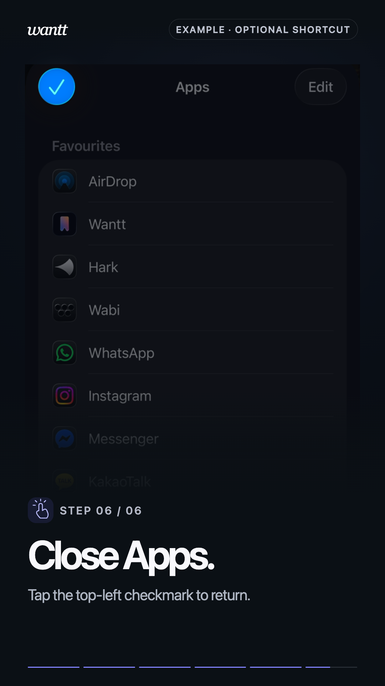

---
---
Save from Instagram — Wantt
{% include site-icons.html %}
wanttfirst-time setup
Sharing with Wantt
Save it. Find it later.
A complete example from Instagram to Wantt. Press Play when you’re ready; you can pause and try each step on your iPhone.
01 · FIRST SAVE
From Reel to place.
Choose Wantt in the Share Sheet, wait for Saved to Wantt, then tap Done. Later, open Wantt and find your save in Places.
This is a recorded example. Watching does not change your iPhone’s settings. Processing time and available details vary.

Example · paused
Instructions & viewing options
Open a public Instagram post or Reel. Tap its share arrow, then Share to….
Swipe across the iPhone Share Sheet’s app row and choose Wantt.
If Wantt is missing, open More. Choose Wantt there, or tap Edit and enable it if it is off. Finish Edit, then choose Wantt. Favourites are optional.
Wait for Saved to Wantt, then tap Done. You can stay in Instagram.
Later, open Wantt from your Home Screen. Find your save in Places and tap it for details. Some details may still be on their way.
30-second example · no sound needed
02 · OPTIONAL SHORTCUT
Keep Wantt close by.
Add Wantt to your sharing Favourites if you’d like it easier to reach. You can save without adding or reordering it.

Example · paused
Instructions & viewing options
In the Share Sheet, swipe across the app row to More, then tap Edit.
Enable Wantt if it is off. Tap the + beside Wantt to add it to Favourites when offered.
Optionally, hold its reorder handle and move it nearer the top.
Tap the top-right checkmark or Done to finish editing. Then close the Apps list with the top-left checkmark or Done to return to sharing. Labels may vary by iOS version.
Next time, choose Wantt from the app row. Watching this example does not configure your phone.